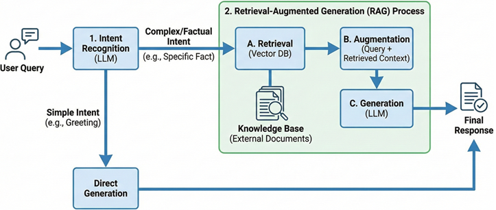
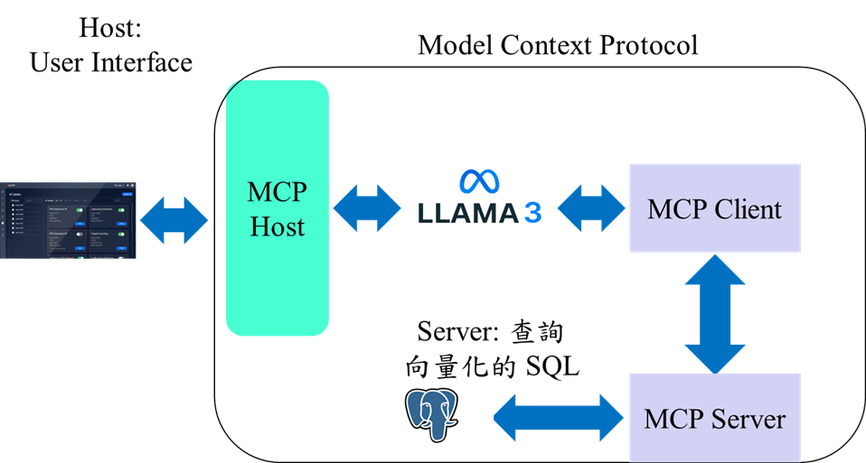

Medical Image Segmentation, 2024
An efficient SAM Adapters framework for medical image segmentation
- Overcomes the domain gap for the SAM in medical images.
- Adapter design to reduce the computation.
- Handles fuzzy boundaries effectively.

Unsupervised Learning, 2023
Integration of Intent Recognition and RAG
- A retrieval agent capable of dynamic decision-making.
- Handling ambiguous user instructions.
- Utilizing RAG for semantic search.

Computer Vision Application, 2022
Practical Implementation of Model Context Protocol (MCP) Integration
- A state-of-the-art standard protocol in the field of AI agents.
- Communication between the client-side, AI applications, and backend databases via the MCP.